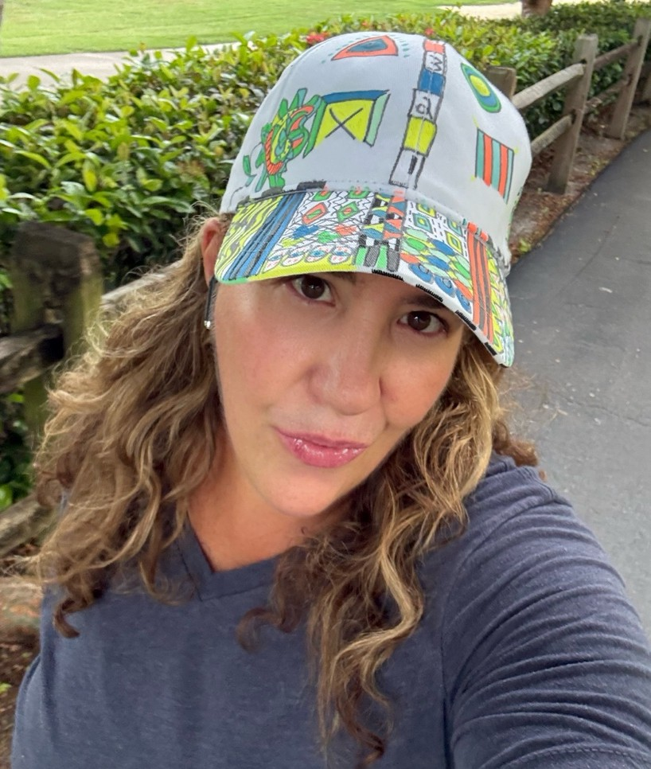

03 / MEET THE INTUITIVE ARTIST
The person.
The passion.
Camila.
Art without boundaries.
Expression without rules.
I’m Camila, the creative force behind Fulatronik. Through intuitive abstraction, bold colors, graffiti-inspired energy, and organic forms, I create art that moves beyond the ordinary.
Every piece is an exploration of emotion, imagination, and the unexpected — a world where art is felt, not just seen.
LIVE LOVE ART / FULATRONIK
I create simple Colors in Original Artworks